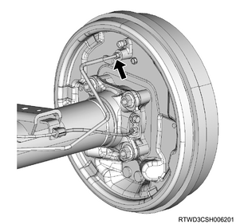

Rear differential assembly (drum brake) removal (All models)
1. Disc wheel removal
1. Remove the disc wheel from vehicle.
2. Rear axle differential oil drain
1. Drain the rear axle differential oil from the rear axle case.
3. Rear propeller shaft assembly preparation
Note
- The rear propeller shaft assembly is adjusted to have a precise balance, so before removing and disassembling, always place an alignment mark for each of the joints.
- Put the alignment marks on the flanges on both the front and rear sides of the rear propeller shaft.

4. Center bearing assembly removal
Note
- The following is the 2WD model.
1. Remove the center bearing assembly from the frame.
Note
- Remove the center bearing fixing bolt.
5. Rear propeller shaft assembly removal
1. Remove the rear propeller shaft assembly from vehicle.
Note
- Remove the bolt, the nut, and the washer on the rear axle side.
- Plug the hole at the rear end of the transmission to prevent oil leakage.
6. Brake drum removal
1. Remove the brake drum from the brake assembly.
7. Rear wheel speed sensor safety information
Note
- If the wheel speed sensor is damaged in the course of the maintenance works, that may cause the following symptoms.
- ABS abnormalities due to sensor damage
- In case of ABS failure or ABS malfunction due to improper sensor installation, installation/removal of the wheel speed sensor, or replacement of the wheel speed sensor, follow the precautions indicated in the procedure for the work.
8. Rear wheel speed sensor disconnect
1. Disconnect the harness connector from the wheel speed sensor.
9. Rear wheel speed sensor removal
1. Disconnect the harness clip from the harness.
Note
- Remove the harness fixing bolt.
- Disconnect the harness fixing clip.
2. Remove the wheel speed sensor from the rear axle case.
Note
- Remove the sensor-fixing bolt and wheel speed sensor.
Caution
- When the wheel speed sensor body does not come off easily due to the rust on the knuckle or support, use a rust penetrant, etc., and carefully remove the sensor body by shifting it little by little.
- Be careful not to bump or step on the removed sensor.
- Never perform following works.
- Remove the sensor body by hammering.
- Insert a flat-head screwdriver or the like into the gap to remove it forcibly.
- When removing the wheel speed sensor, do not pull the harness.

10. Brake pipe removal
1. Remove the brake pipe from the wheel cylinder assembly.

11. Adjust lever spring removal
1. Remove the adjust lever spring from the adjust lever.
2. Remove the adjust lever spring from the parking lever.
12. Adjust lever removal
1. Remove the adjust lever from the brake shoe.
13. Shoe holder pin removal
1. Remove the shoe holding spring from the shoe holder pin.
Note
- Push the spring toward the brake shoe and hold it.
- Turn the spring to remove it from the shoe holder pin.
- Push the spring toward the brake shoe and hold it.
- Turn the spring.
2. Remove the shoe holder pin from the brake shoe.
14. Spring removal
1. Remove the spring from the brake shoe.
Note
- Remove the lower side spring.
- Slide the brake shoe and the lower side spring toward the ground.
- Lower spring
15. Adjuster assembly removal
1. Remove the adjuster assembly from the brake shoe.
16. Brake shoe assembly removal
1. Remove the brake shoe assembly from the back plate.
17. Parking lever removal
1. Remove the parking lever from the brake shoe.
18. Rear wheel cylinder assembly removal
1. Remove the wheel cylinder assembly from the back plate.
2. Remove the brake pipe from the wheel cylinder assembly.
19. Cover removal
1. Remove the cover from the back plate.
20. Rear axle shaft removal
1. Remove the bearing holder from the axle case.
Note
- Remove the fixing nut.
2. Remove the rear axle shaft from the axle case.
Note
- Remove the axle shaft together with the back plate.
- When pulling out the axle shaft, the axle case oil seal will be damaged. Replace with a new one.
21. Rear differential assembly removal
1. Remove the rear differential assembly from the rear axle case.
Note
- Hold the differential carrier with a jack.